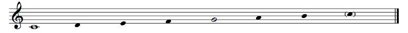

Scales are... difficult to explain. We'll spend much more time on scales and modes in later chapters, but we have to start somewhere, right?
A scale is a bunch of pitches in order (ascending or descending). You don't have to play those pitches, but that's what the scale is. For example, this is a C major scale, ascending:
Example 4.1
Rhythm doesn't matter here; I'm just showing you the notes. C major means that the scale is based on C, so I made that C into a whole note just to make it stand out. This basis note is called the tonic. The G is also very important; that note is called the dominant. I made it a non-filed-in notehead. The upper C is just a repetition of the lower C, so I put it in parentheses.
"C major" means that the tonic is C and the mode is major. There are many other modes, but the most important ones are major and minor (we'll talk about minor later). The mode is basically the flavor of the scale. This is a little hard to explain, but it will make sense in a little bit.
If you're astute, you may have noticed that these notes are all... white keys on the keyboard!
You do not need them anymore. You're a big <child of your gender> now. I left the dot on Middle C because it's not clear from looking at the keyboard which note is Middle C, but by now you should be able to tell which note is which on the keyboard without the note names.
Anyway, the C major scale is an octave of the white keys starting on C.
No, actually. We'll see why soon enough! I would tell you what it is, except that... it's complicated. If you know your music theory, you know the answer: it's the D dorian scale. If you really know your music theory, you know that there's still some missing information: it could be the hypomixolydian scale! We'll save that discussion for when we get to modes.
Am I?
That's actually a good place to start. The early history of Western music, loosely speaking, is these so-called Gregorian modes (check the link just above). People used these notes for their church singing (so they're also called church modes), and the modes were named based on which note was the final — the resting place of the music — and what the range was. So, if your music went from D to D with a final on D (D E F G A B C D), that was called the dorian mode (Mode I in the Gregorian system), but if it used the same notes with the music ending on G instead of D, it was called the hypomixolydian mode (Mode VIII in their system). Some notes might have been sung higher or lower to make sounds work better. In the dorian mode, for example the B was often lowered a bit. If you look at the image at that link, you can see that the lowest note in any mode was the A below the staff (A3, but they weren't so strict on pitch back then) in the hypodorian (Mode 2), and the highest note was the G above the staff (G5) in the mixolydian (Mode VII). If we label these notes starting on A, we have A B C D E F G H I K L M N O. Remember when we talked about this back in Chapter 1? They eventually realized that the note they called H was really just an A but an octave higher, and the other letters fell out of use.
Eventually we settled on the so-called major scale using those notes, which was not one of the 8 Gregorian Modes, and that starts on C. But those notes, A B C D E F G and their like... Together, those notes have a name...
...the diatonic scale.
The C major scale is an example of a diatonic scale. The white keys from D to C, E to D, F to E, G to F, A to G or B to A are also diatonic scales. In fact, any scale that follows the same pattern as the white keys on the keyboard is a diatonic scale, like, for example, D major: D E F# G A B C#.
So let's talk about the properties of the diatonic scale, shall we?
{kind=link}